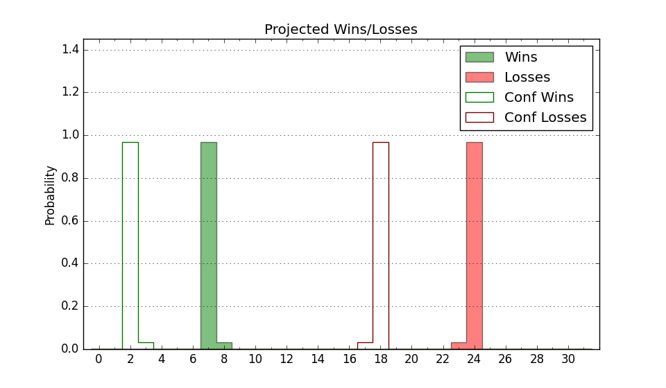

| Home | Game Probabilities | Conferences | Preseason Predictions | Odds Charts | NCAA Tournament |
| City: | South Orange, New Jersey | |
| Conference: | Big East (11th)
| |
| Record: | 2-17 (Conf) 7-23 (Overall) | |
| Ratings: | Comp.: -3.2 (199th) Net: -3.2 (199th) Off: 99.8 (284th) Def: 103.0 (105th) SoR: 0.0 (112th) |
| Remaining | ||||||
|---|---|---|---|---|---|---|
| Date | Opponent | Win Prob | Pred. | |||
| 3/8 | @ Connecticut (28) | 3.7% | L 55-76 | |||
| Previous | Game Score | |||||
| Date | Opponent | Win Prob | Result | Off | Def | Net |
| 11/4 | Saint Peter's (299) | 83.0% | W 57-53 | -15.1 | 3.6 | -11.5 |
| 11/9 | Fordham (241) | 73.9% | L 56-57 | -20.4 | 9.5 | -10.9 |
| 11/13 | (N) Hofstra (217) | 53.9% | L 48-49 | -12.2 | 10.9 | -1.4 |
| 11/16 | Wagner (343) | 90.4% | W 54-28 | 4.8 | 28.8 | 33.7 |
| 11/21 | (N) VCU (33) | 7.2% | W 69-66 | 6.7 | 24.3 | 31.0 |
| 11/22 | (N) Vanderbilt (49) | 10.5% | L 60-76 | -2.9 | -0.8 | -3.6 |
| 11/24 | (N) Florida Atlantic (109) | 28.9% | W 63-61 | -6.0 | 20.1 | 14.1 |
| 11/30 | Monmouth (269) | 78.6% | L 51-63 | -19.8 | -10.0 | -29.8 |
| 12/4 | NJIT (353) | 92.5% | W 67-56 | 3.6 | -6.0 | -2.4 |
| 12/8 | Oklahoma St. (99) | 39.3% | L 76-85 | 14.8 | -25.0 | -10.2 |
| 12/14 | @Rutgers (74) | 10.1% | L 63-66 | 4.0 | 14.5 | 18.5 |
| 12/17 | @Villanova (48) | 5.7% | L 67-79 | 12.9 | -0.7 | 12.2 |
| 12/22 | Georgetown (83) | 32.7% | L 60-61 | -1.8 | 6.9 | 5.1 |
| 12/31 | @Xavier (50) | 6.0% | L 72-94 | 11.4 | -23.4 | -12.0 |
| 1/8 | DePaul (116) | 44.9% | W 85-80 | 26.9 | -6.3 | 20.5 |
| 1/11 | @Providence (89) | 13.3% | L 85-91 | 24.3 | -21.4 | 2.9 |
| 1/15 | @Butler (72) | 9.7% | L 77-82 | 27.4 | -13.5 | 14.0 |
| 1/18 | St. John's (26) | 10.5% | L 51-79 | -14.2 | -4.7 | -18.9 |
| 1/21 | Marquette (25) | 10.4% | L 59-76 | -4.4 | 4.9 | 0.5 |
| 1/25 | @Creighton (39) | 4.7% | L 54-79 | 1.9 | -8.3 | -6.4 |
| 1/28 | Providence (89) | 34.4% | L 67-69 | -4.6 | -0.8 | -5.3 |
| 2/2 | @DePaul (116) | 19.3% | L 57-74 | -9.8 | -5.6 | -15.4 |
| 2/5 | Butler (72) | 26.9% | L 54-84 | -21.9 | -15.0 | -36.9 |
| 2/8 | @Georgetown (83) | 12.5% | L 46-60 | -13.2 | 9.9 | -3.3 |
| 2/15 | Connecticut (28) | 11.5% | W 69-68 | 9.5 | 17.6 | 27.1 |
| 2/18 | @Marquette (25) | 3.3% | L 56-80 | 3.4 | -9.4 | -6.0 |
| 2/23 | Xavier (50) | 17.9% | L 66-73 | -1.0 | 4.5 | 3.5 |
| 2/26 | Villanova (48) | 17.1% | L 54-59 | -8.4 | 19.5 | 11.1 |
| 3/1 | @St. John's (26) | 3.3% | L 61-71 | 11.7 | 11.0 | 22.6 |
| 3/4 | Creighton (39) | 14.4% | L 61-79 | 5.0 | -17.4 | -12.4 |
| Stats & Trends | |||||
|---|---|---|---|---|---|
| Current | Day | Week | Month | Season | |
| Composite | -3.2 | -0.0 | +0.3 | -0.6 | -11.5 |
| Comp Rank | 199 | -2 | -- | -6 | -110 |
| Net Efficiency | -3.2 | -0.0 | +0.3 | -0.3 | -- |
| Net Rank | 199 | -2 | +1 | -3 | -- |
| Off Efficiency | 99.8 | -0.0 | +0.5 | -1.4 | -- |
| Off Rank | 284 | -- | +5 | -36 | -- |
| Def Efficiency | 103.0 | -0.0 | -0.2 | +1.1 | -- |
| Def Rank | 105 | +3 | +6 | +35 | -- |
| SoS Rank | 54 | -4 | +2 | -4 | -- |
| Exp. Wins | 7.0 | -0.0 | -0.2 | -0.2 | -7.6 |
| Exp. Conf Wins | 2.0 | -0.0 | -0.2 | -0.2 | -5.2 |
| Conf Champ Prob | 0.0 | -- | -- | -- | -0.7 |

| Advanced Stats | ||
|---|---|---|
| Stat | Value | Rank |
| Off Eff FG % | 0.477 | 288 |
| Off Ast Ratio | 0.140 | 208 |
| Off ORB% | 0.323 | 83 |
| Off TO Rate | 0.155 | 230 |
| Off FT Ratio | 0.352 | 114 |
| Def Eff FG % | 0.521 | 212 |
| Def Ast Ratio | 0.145 | 161 |
| Def ORB% | 0.283 | 169 |
| Def TO Rate | 0.198 | 5 |
| Def FT Ratio | 0.392 | 315 |